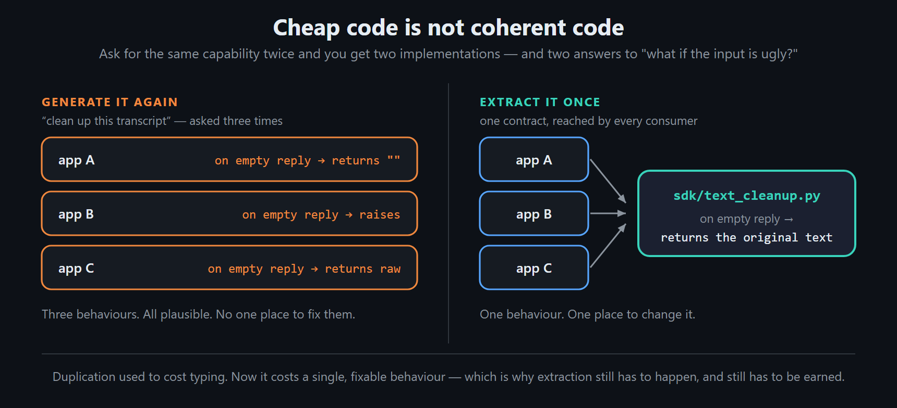
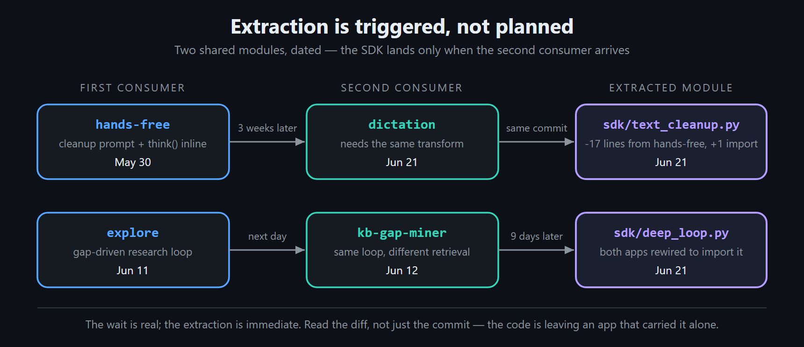
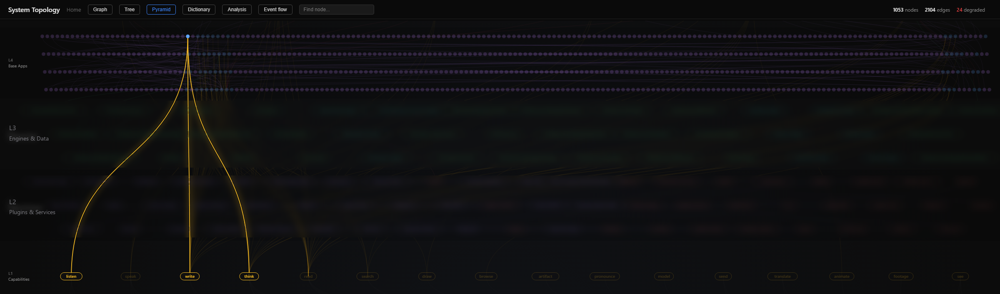
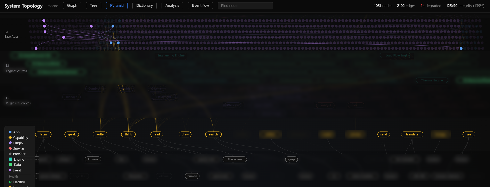
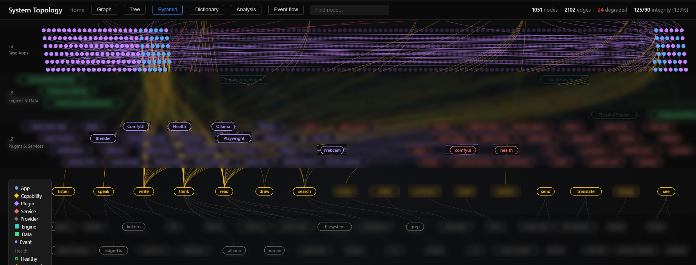
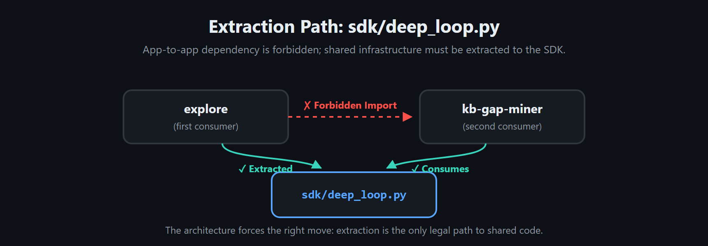
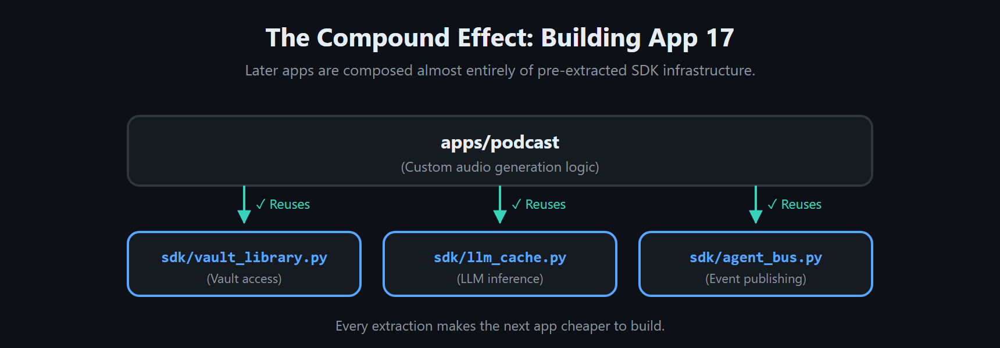

How Architecture Emerges in AI-Assisted Development
Traditional architecture often front-loads structural decisions—which components exist, what each owns, and where the seams run—because changing them later is expensive. AI-assisted development changes that economics, though not in the way "just generate it again" assumes. It produces a working app quickly; what it cannot produce is consistency. Ask for the same capability twice and you get two implementations — both plausible, both working, neither identical, each with its own quiet opinion about what to do when the input is ugly. Cheap code is not coherent code, and a behaviour only stays one behaviour if it lives in one place. So someone still has to decide which parts deserve to become shared architecture: the pieces that should have a single implementation, and evolve in a single place.

That decision cannot be made upfront. The system now outgrows the blueprint faster than anyone can redraw it, and the boundaries worth drawing only become clear after they have met real inputs in more than one application. Fix those application-level boundaries too early and guesses calcify. Decide nothing, however, and a hundred cheaply generated apps drift into a hundred private answers to the same question — each subtly different, none of them wrong enough to notice, and no single place to fix any of them.
EmptyOS therefore did not design its final app and SDK structure upfront. It designed the rules of growth: apps communicate through declared capabilities and events, never through another app’s internals, and shared code must sit behind a public boundary. Those rules are safe to establish early because they govern dependency direction and ownership — they do not try to predict what the system will become, or how a model will behave inside it. Everything above those rules — the apps, and the shared code beneath them — had to earn its place, under a single promotion rule: nothing becomes shared until a second app, built for a different reason, turns out to need the same thing. One app needing it is a hunch. Two is evidence.
The rule is simple; applying it is not. What follows is how it shaped one system over three months—a field note from a fast-growing open-source project, not a controlled study. The current modules and apps are linked to the public repository; the dates come from the working history behind its snapshot releases.
Specific first, reusable second¶
The first version of EmptyOS's transcript cleanup lived inside one app. The hands-free app needed to turn rough speech-to-text output into readable prose: repair punctuation, fix obvious mis-hears, and preserve the speaker's own vocabulary. There was no framework — a CLEANUP_PROMPT constant and a think() call, sitting in hands-free/app.py, doing just enough to make one feature work. It sat there for three weeks.
Then the dictation app needed the same transformation, and the commit that introduced dictation is also the commit that deleted seventeen lines from hands-free and replaced them with a single import. The cleanup logic moved into sdk/text_cleanup.py, shaped by two working consumers rather than a whiteboard guess. The extraction wasn't planned; it was triggered.
That sequence is the whole claim, so the dates are worth showing plainly rather than asking anyone to take on faith:

The commit alone looks like an abstraction designed for two callers; the diff shows the opposite — code leaving an app that had carried it alone. That is the entire difference between extraction and speculative design. EmptyOS codifies it as Rule 9:
Extract shared, then reuse — build specific first in one app, extract to
sdk/when a second app needs it.
Extractions stay this cheap because apps own almost no plumbing: an app declares what it needs and the platform provides it. Here is the live dependency graph with just those two apps lit — everything else dimmed out.

The integration, end to end. Two apps (the lit dot, L4) reach down past engines, plugins, and services to exactly three capabilities: listen, write, think. They never touch each other, and they never name a provider — think resolves to whichever model backend is configured, listen to whichever transcriber. That is most of what an app declares, and it is why the transcript-cleanup logic could move out from under both apps without either one noticing.
A single extraction like that is invisible: a file moves, two apps get shorter. What three months of them looks like — underneath a system that kept growing the whole time — is the pair below. Same graph, same tiers, twelve weeks apart.

Day one. The tiers exist, but almost nothing is wired: a few apps reaching down to write, think, and read, each still carrying its own logic.

Three months later. Same view, 1,051 nodes and 2,102 edges. No app reaches sideways to another — but that proves nothing, since sideways is forbidden. What the picture honestly shows is scale and layering; whether the boundaries in that thickening base are the right ones is a separate question, and the graph cannot answer it.
The base was not designed upfront; it accumulated, one text_cleanup.py at a time. But accumulation on its own is just sprawl with good manners. Two things have to be true for it to be architecture: the growth has to be forced down onto shared ground rather than sideways into private coupling, and each piece of that ground has to have been earned by a second consumer. The first is a constraint. The second is a judgment — and it is the harder one, because "a second app needs the same thing" is much easier to say than to establish.
The constraint, and what it cannot do¶
The forcing move is the one rule set on day one: an app may never reach into another app's internals. When two apps need the same code, the only legal home for it is a named, public boundary.

Be precise about what that buys, because it is easy to overclaim. It does not produce good abstractions — nothing in the architecture can tell a real shared shape from a coincidence, or stop me from extracting the wrong thing. What it removes is the cheap escape route: an app that wants another app's code cannot quietly import it and move on, so the decision has to be made in the open, by a person, instead of accreting as a private dependency nobody voted for. Three of those decisions are worth walking through.
Three boundaries revealed by use¶
| Extracted | Triggered by | What the boundary owns | What stayed in the apps |
|---|---|---|---|
sdk/text_cleanup.py |
hands-free → dictation |
Polish a raw transcript: punctuation, casing, obvious homophones — never rewrite the speaker's words. Takes a think_fn; returns the original text if the model call comes back empty. |
The microphone, the UI, and what each app does with the cleaned text. |
sdk/deep_loop.py |
explore → kb-gap-miner |
The gap-driven control flow: answer, find what the answer missed, retrieve evidence for the gaps, synthesise. | The retrieval channels and the synthesis prompts — different in each app. |
VaultModel |
jobs → people |
A typed contract over vault-note frontmatter. Stayed unexported from the SDK for weeks while it had one consumer. | Each app's own fields and validation rules. |
Each carries its own reason for existing, recorded in the source rather than in anyone's memory. text_cleanup's reads:
"Extracted from
apps/public/standard/hands-freewhen thedictationapp became the second consumer of the same 'polish a speech-to-text transcript' think call (CLAUDE.md rule 9)"
Telling a boundary from a resemblance¶
Two apps can look like they need the same thing when they don't, and the resemblance is always easier to see than the difference. I have no checklist for telling them apart, and I don't trust the ones I have read. What the three extractions above have in common is not a test I applied beforehand — it is a pattern I noticed afterwards.
The shared piece was always smaller than the feature that revealed it. deep_loop took the control flow and left the retrieval channels and the prompts behind. text_cleanup took the polishing step and left the microphone, the interface, and whatever each app did with the cleaned-up text. VaultModel took the typed contract and left each app's own fields. In every case most of the original feature stayed exactly where it was.
That gives me the closest thing I have to a warning sign. If an extraction leaves nothing behind in the app it came from, I have probably pulled out the whole feature rather than the boundary underneath it — and the shared module will end up carrying both apps' opinions, usually as a flag that switches between them. The flag is the tell. It means the two callers never wanted the same thing.
And the part I would attack if I were reading this: I wrote both apps. When the same person builds both, the second one may resemble the first simply because of how that person thinks — so the shape they appear to share can be a habit rather than a real seam in the problem. Two teams arriving at the same boundary without talking to each other would be far stronger evidence than anything I have here. Which is the honest version of the rule: a second app is a reason to go and look. It is not proof that a boundary is there.
The compound effect¶
The payoff arrives later, and it is countable. The Podcast app is about 1,800 lines, and its imports tell the story: ten shared primitives from five SDK modules — the staged Pipeline that gives it resumable, previewable runs, RunBudget for cost ceilings, five media helpers for scene planning, stitching, tempo, cleanup, and output review, and the JSON parsing every model-calling app needs. Most of those boundaries were shaped by earlier pairs of consumers; the pipeline layer was extracted only after two different apps had each hand-rolled the same stage sequencing and lost work to it. What Podcast had to write itself is the part no other app could know: a two-host script plan, the voice casting, the episode assembly.

The benefit is not the size of the SDK — a large SDK full of APIs nobody asked for is a liability, not an asset. The benefit is that every module in it was already proven by the two real apps that shaped it, and its docstring says which two. So when someone asks a year from now why a module stops where it does, the answer is on file: it does what both consumers needed, and nothing else. An abstraction designed upfront has no answer to that question except the taste of whoever drew it.
The takeaway¶
Build the first app. Let it keep its own copy of everything. Build the second app. When it reaches for something the first one already has, you have not found an abstraction — you have found a question.
Then go and answer it, with the code in front of you rather than a rule in your head. Every app is cheap to write now, which is exactly why the resemblances multiply and why the judgment is the scarce part.
The SDK that survives this looks less elegant on a whiteboard, because its boundaries follow the grain of real use rather than the symmetry of a diagram. But every module in it can answer the only question that matters: which concrete consumers proved that this shape deserved to be shared?
That is a stronger foundation than a framework whose only consumer was the imagination that designed it.
EmptyOS is a personal operating system that runs as a local web app over a plain markdown vault. It's open source and evolving in public.
Listen to this post¶
⬇ Download as video — share on LinkedIn, X, etc.
AI-generated podcast discussion of this article